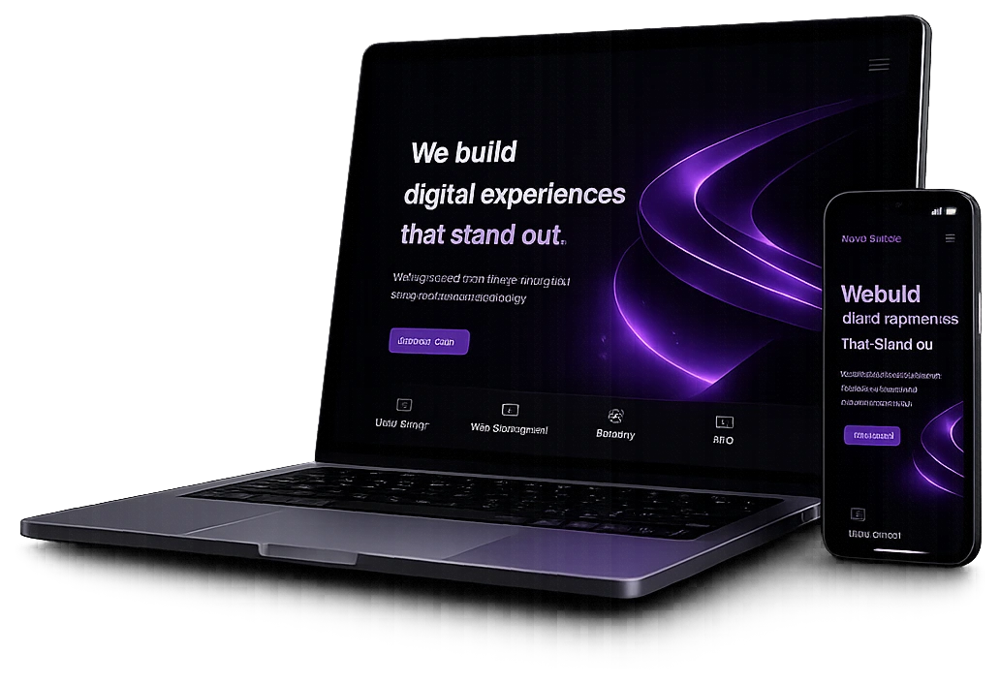
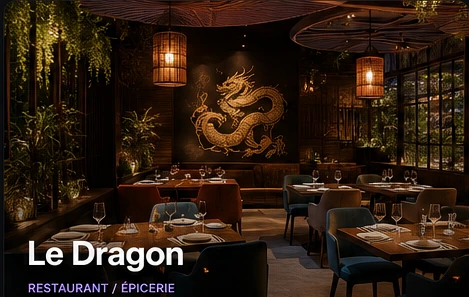
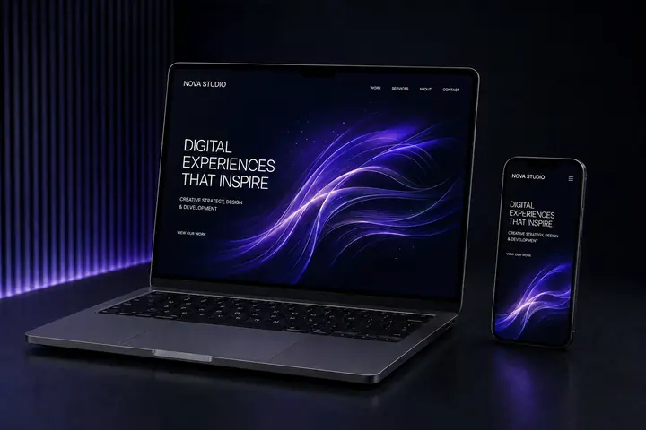
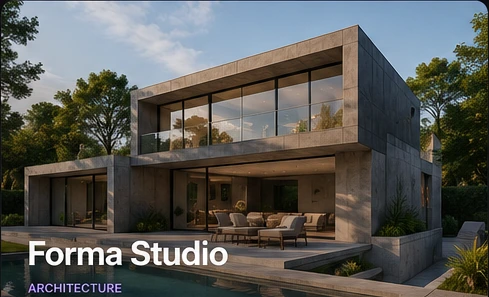

RESTAURATION
↗ DISPONIBLE POUR DE NOUVEAUX PROJETS
Prêt à donner une nouvelle dimension à votre entreprise ?
Je conçois des sites web modernes, rapides et performants qui transforment vos visiteurs en clients.
Design sur mesureResponsiveCode légerSEO prêt à travailler

RÉALISATIONSTrois métiers.
Trois métiers.
Trois identités différentes.
Chaque concept est pensé autour du secteur, de la cible et de l’action principale attendue du visiteur.

RESTAURANT / ÉPICERIE
Le Dragon
Une expérience sombre, chaleureuse et orientée réservation.
Étude de cas →
STUDIO DIGITAL
Nova Studio
Une direction créative et technologique pour convertir rapidement.
Étude de cas →
ARCHITECTURE
Forma Studio
Une interface éditoriale où l’architecture reste au premier plan.
Étude de cas →SECTEURSUne direction différente
Une direction différente
pour chaque univers.
Le style ne doit jamais être interchangeable : il part du métier, du lieu, de l’offre et des clients que vous voulez attirer.
ARTISANS & SERVICES
↗Transformer un savoir-faire en confiance.
COMMERCES
↗Rendre l’offre lisible et facile à contacter.
INDÉPENDANTS
↗Construire une image plus forte que la concurrence.
SERVICESUn site pensé pour votre activité,
Un site pensé pour votre activité,
pas pour remplir un template.
Je construis une présence web claire, rapide et cohérente avec votre positionnement.
◈
Site vitrine
Une présence professionnelle pour présenter vos services, votre savoir-faire et générer des contacts.
DESIGN PERSONNALISÉ↗
Landing page
Une page concentrée sur une offre et un objectif : prise de contact, réservation ou demande de devis.
CONVERSION⌁
Refonte & optimisation
Modernisation de l’interface, meilleure hiérarchie, responsive et optimisation des performances.
REFONTE⚙
Évolutions
Ajout de pages, intégrations, maintenance ponctuelle et amélioration progressive après la mise en ligne.
SUIVI
RESPONSIVE EXPERIENCE
Le même niveau de détail,
Le même niveau de détail,
sur chaque écran.
La version mobile n’est pas une version réduite du desktop. Navigation, hiérarchie, espacements et appels à l’action sont adaptés au contexte.
DesktopTabletMobile
EXEMPLE DE REFONTEPasser d’un site fonctionnel
Passer d’un site fonctionnel
à une expérience qui inspire confiance.
Démonstration visuelle : ce comparatif illustre une approche de refonte, il ne s’agit pas d’un client réel.
AVANT — EXEMPLE
APRÈS — DIRECTION PREMIUM
EXPÉRIENCEUne interface qui réagit
Une interface qui réagit
sans voler la vedette au contenu.
Des interactions courtes, utiles et fluides donnent du relief au site sans ralentir la navigation.
Interactions précises
Hover, profondeur et réactions au pointeur pour rendre les éléments importants plus vivants.
Rythme éditorial
Révélations progressives et hiérarchie typographique pour guider naturellement la lecture.
Profondeur subtile
Lumière, perspective et parallax léger uniquement là où ils renforcent le rendu premium.
WEBDESIGN✦RESPONSIVE✦PERFORMANCE✦SEO✦MICRO-INTERACTIONS✦ACCESSIBILITÉ✦✦✦✦✦✦✦
MÉTHODEUn processus simple,
Un processus simple,
du premier échange à la mise en ligne.
01
Découverte
Votre activité, votre cible, vos priorités et l’action principale attendue.
02
Direction visuelle
Une identité et une composition adaptées à votre univers, avant de développer.
03
Développement
Intégration responsive, micro-animations et optimisation du chargement.
04
Mise en ligne
Domaine, HTTPS, vérifications finales et publication du site.
ResponsiveMobile • tablette • desktop
Code légerSans dépendances inutiles
HTTPSÀ configurer avant livraison
SEOStructure propre dès la base
POUR VOTRE ACTIVITÉLe design doit être beau.
Le design doit être beau.
Mais surtout évident à utiliser.
Chaque page est pensée autour d’une action claire : comprendre votre offre, vous appeler, réserver, demander un devis ou venir sur place.
Découvrir mon approche ↗
DIRECTION CRÉATIVE / 04
MON APPROCHE
Moins d’éléments.
Plus d’impact.
Un bon site ne cherche pas à impressionner avec 40 effets. Il combine une idée forte, une hiérarchie évidente et quelques interactions mémorables.
01 — CLARTÉ02 — RYTHME03 — CONTRASTE04 — CONVERSION
OFFRESDes tarifs lisibles,
Des tarifs lisibles,
avec un périmètre clair.
Les montants restent indicatifs : un devis précise le contenu exact avant le démarrage.
Essentiel
349 €
Une présence simple et professionnelle pour présenter l’essentiel.
- ✓ One page personnalisée
- ✓ Responsive
- ✓ SEO technique de base
- ✓ Mise en ligne
LA PLUS CHOISIE
POUR UNE ENTREPRISEProfessionnel
599 €
Une vraie vitrine pour présenter votre activité et transformer les visites en demandes.
- ✓ Jusqu’à 5 pages
- ✓ Direction visuelle sur mesure
- ✓ Formulaire de contact
- ✓ Optimisation performance
- ✓ Mise en place HTTPS
Sur mesure
Sur devis
Pour les projets nécessitant davantage de pages ou d’intégrations.
- ✓ Pages supplémentaires
- ✓ Fonctionnalités avancées
- ✓ Intégrations externes
- ✓ Accompagnement adapté
FONCTIONNALITÉS POSSIBLESLe bon outil,
Le bon outil,
au bon endroit.
Selon le métier : seulement les fonctionnalités qui servent réellement le parcours du client.
FAQGoogle MapsAppel rapideWhatsAppRéservationFormulaire de devisGalerieHoraires
FAQLes questions avant
Les questions avant
de lancer un projet.
Des réponses simples sur le fonctionnement d’une création de site.
01Combien de temps faut-il pour créer un site ?+
Le délai dépend du nombre de pages, des contenus à préparer et des fonctionnalités. Le planning est défini avant de commencer.
02Le site sera-t-il adapté au téléphone ?+
Oui. L’interface est pensée pour desktop, tablette et mobile avec des ajustements spécifiques à chaque format.
03Puis-je modifier le site plus tard ?+
Oui. Le site peut évoluer avec de nouvelles pages, de nouvelles fonctionnalités ou une maintenance ponctuelle selon le besoin.
04Peux-tu reprendre un site déjà existant ?+
Oui. Une refonte peut conserver les éléments utiles tout en modernisant la structure, le responsive et la direction visuelle.
VOTRE PROJETVotre entreprise mérite
Votre entreprise mérite
mieux qu’un site générique.
Présentez-moi votre activité et votre objectif. Je vous propose une direction claire et adaptée à votre entreprise.
Parler de mon projet →